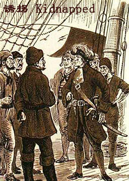
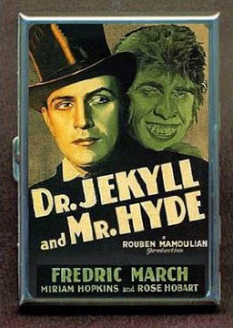
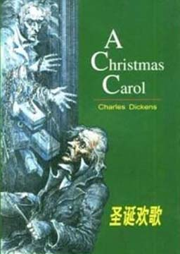

双语小说
收录中英文双语小说300多部，包括世界经典名著、社会小说、悬疑小说等短篇和长篇小说，可按照初中难度、高中难度和大学难度分类阅读，每部小说都有分段中英文对照，点击单词可查看中文翻译。

多里安·格雷的画像（简化版） (The Picture Of Dorian Gray)
作者：奥斯卡·王尔德 (Oscar Wilde) [英国]
我们经常说脸像一本书，能自己讲述故事。当多里安·格雷看到画像中自己的面孔时，便爱上了自己的美貌。任何事物都不能损害他的美貌，任何事物都不能伤害或改变它，爱不能，甚至时间也不能。因此，他切断了他的脸和内心、他的外表和内在世界的联系。他的脸没有改变，总是年轻、漂亮。但是这幅画像——用爱的画笔描绘的画像，却在讲述着真实的故事。它才是真实的多里安·格雷，一天天变老、变丑并满怀恨意。
诱拐（简化版） (Kidnapped)
作者：罗伯特·路易斯·斯蒂文森 (Robert Louis Stevenson) [英国]
苏格兰孤儿戴维为了家族的遗产去找叔父，却被叔父诱拐到船上运往美洲当奴隶。接着发生了一宗谋杀案，戴维被官兵当作凶犯而遭到追捕。在逃亡路上，他巧遇同船的流亡者艾伦，两人结伴而行，在苏格兰高地的荒山野地里度过了一段惊险的逃亡生活，最后回到他当初被诱拐的地方，在朋友帮助下用智谋从叔叔手中夺回应得的财产。
牙齿和爪子（简化版） (Tooth and Claw)
作者：赫克拉·休·芒罗 (Saki) [未知]
每一则故事的主角都是一种凶悍的动物。它们伤害或吞噬着人类的情景，透析出动物凶残的兽性。故事虚悬、离奇。但让我们更加惊疑的是：这些动物会突然出现在雅致的房间里、芬芳的花园或幽静的小片林地间——那些被我们认为是安全、文明的场所。它们为什么会在那儿？为什么Saki把这些猛兽带到了我们的家里？ 答案是，我们希望它们在那儿。当然，我们并不想让真正的狼总是呆在我们的花园里，那会兴味索然。但有时，当我们遇到了不速之客，或者内心深处很厌恶却又不得不表现出彬彬有礼的时候，—只真正的狼有时会非常有用。Saki所描写的动物时而滑稽，时而残忍；但总能撕破我们的伪装，暴露出我们心底的真实情感。公正（简化版） (Justice)
作者：蒂姆·维卡里 (Tim Vicary) [英国]
恐怖分子不在乎杀害谁或伤害谁；对别人是否公正他们并不感兴趣，他们感兴趣的只是炸弹、枪支、杀人，然后如何逃脱法律责任。但是在有警察、法律和监狱以前，人们用一种更古老的方法来讨回公道，那就是以眼还眼，以牙还牙，以命抵命……。国会大厦门外，一颗炸弹在女王乘坐的马车里爆炸，炸死了五人，可偏偏没炸着女王。简•科尔正在观望的人群中。她惊恐地推开惶恐的人群寻找着为女王驾车的父亲。她看到他正躺在血泊中痛苦地呻吟着。阿兰•科尔没有死，但他失去了一条腿。而且他和女儿的危难才刚刚开始，因为他知道恐怖分子的一些事情。尽管当时他还不知道这点，但很快地就意识到了。然而，在某个地方，某个人正急切地想阻止阿兰讲明真相……
钢铁是怎样炼成的 (How The Steel Was Tempered)
作者：尼古拉·奥斯特洛夫斯基 (Nikolai Alexeevich Ostrovsky) [前苏联]
保尔在幼年便饱偿了人间的心酸，目睹了腐朽的旧社会底层人民的困苦。他被严酷的瓦西里神甫赶出学校后，迫于生活压力来到车站食堂打工。在那里，他目睹了堂倌们的的丑恶嘴脸，腐朽社会里的不平等与劳动人民的悲惨境遇，这使他萌发了打破资产阶级社会黑暗的愿望。在革命的风暴到来时，他义无反顾地参加了红军，加入了布琼尼的骑兵旅与波兰侵略者展开了战斗。在战场上是个敢于冲锋陷阵的战士和优秀的政治宣传员。保尔希望冬妮娅能和自己站在同一战线上，却被她回绝，保尔便离开了冬妮娅。由于他长期参加艰苦斗争，健康受到严重损害，到1927年，病情急剧恶化，但他以惊人的毅力同病魔作斗争。在海滨疗养时，他偶然认识了女民工达雅并相爱。同年底，他着手创作一篇关于科托夫斯基师团的“历史抒情英雄故事”。不幸的是，唯一的手稿在寄给朋友们审读时被邮局弄丢了。保尔一度灰心丧气，在母亲和妻子的帮助下，他用生命写成的小说《暴风雨所诞生的》终于出版了。
化身博士（简化版） (Dr. Jekyll and Mr. Hyde)
作者：罗伯特·路易斯·史蒂文森 (Robert Louis Stevenson) [英国]
亨利·杰基尔医生喝了一种试验用的药剂，在晚上化身成邪恶的海德先生四处作恶，他终日徘徊在善恶之间，其内心属灵的内疚和犯罪的快感不断冲突，令他饱受折磨。这种貌似荒诞无稽的故事，其实蕴含了最深刻的人性命题：人，到底是黑白分明，一成不变的非善即恶，还是既善亦恶，时善时恶？
远离尘嚣（简化版） (Far from the Madding Crowd)
作者：托马斯·哈代 (Thomas Hardy) [英国]
在英国维多利亚时代，资本主义经济的迅速发展使田园牧歌式的封建宗法制社会急剧瓦解，恬静的乡村生活已不那么平静了。勤劳朴实的加布里埃尔在趋于赤贫的情况下爱上了女农场主芭思希芭并做了她的羊倌。可是轻佻的芭思希芭却醉心于乡村中一个唐璜式的浪荡不羁人物特洛伊。特罗伊曾引诱过一位天真无邪的姑娘范妮，后来又抛弃她与芭思希芭结了婚。另一个农场主波德伍德像疯了似的爱着曾“引诱”过他的芭思希芭，后来他杀死了特洛伊，陷入精神错乱，被判终身监禁。最后芭思希芭与对她忠心耿耿的加布里埃尔结了婚。
圣诞颂歌（简化版） (A Christmas Carol)
作者：查尔斯·狄更斯 (Charles John Huffam Dickens) [英国]
斯克罗吉积攒了很多钱，然而他却不舍得为职员的炉火加一块儿煤，他的侄子好意的邀请他参加圣诞夜的晚会，他却认为侄子是为了占他的便宜而推辞，社会活动者请他为穷人施舍一点圣诞的饭菜，也被他无情地断然拒绝。他晚上回到了家，夜幕里他看见了三个幽灵，这真的是幽灵？还是他的幻像？然而，幽灵的出现却使他发生了天翻地覆的变化。曾达的囚徒（简化版） (The Prisoner of Zenda)
作者：安东尼·霍普 (Anthony Hope) [英国]
鲁道夫·拉森狄尔年轻富有，出生于一个历史悠久的英国家庭，可他却长着卢里塔尼亚王室所特有的深红色头发和长而笔挺的鼻子。是多年前一个小小的家庭“意外”造成的结果。鲁道夫决定去参加卢里塔尼亚斯国王的加冕典礼。他到了曾达城，并在森林里漫步。第二天上午他却发现自己身陷意想不到的奇遇之中。他与新朋友萨普特上尉和弗里茨一起制定了营救曾达城堡中的囚徒的计划。很快他就与国王的死对头黑迈克和鲁帕特交上了手，而且爱上了国王的表妹，美丽的弗蕾维亚公主。然后国王……。然而，谁才是真正的卢里塔尼亚的国王呢？大卫·科波菲尔（简化版） (David Copperfield)
作者：查尔斯·狄更斯 (Charles John Huffam Dickens) [英国]
讲述了主人公大卫从幼年至中年的生活历程，以“我”的出生为源，将朋友的真诚与阴暗、爱情的幼稚与冲动、婚姻的甜美与琐碎、家人的矛盾与和谐汇聚成一条溪流，在命运的河床上缓缓流淌，最终融入宽容壮美的大海。其间夹杂各色人物与机缘。语言诙谐风趣，展示了19世纪中叶英国的广阔画面，反映了狄更斯希望人间充满善良正义的理想。